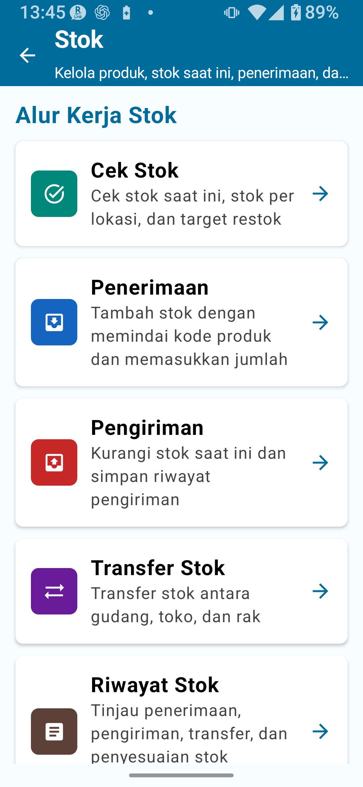
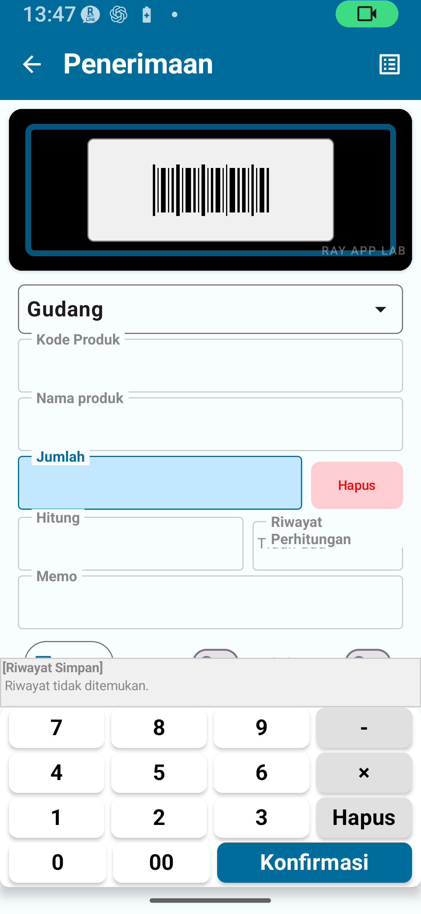
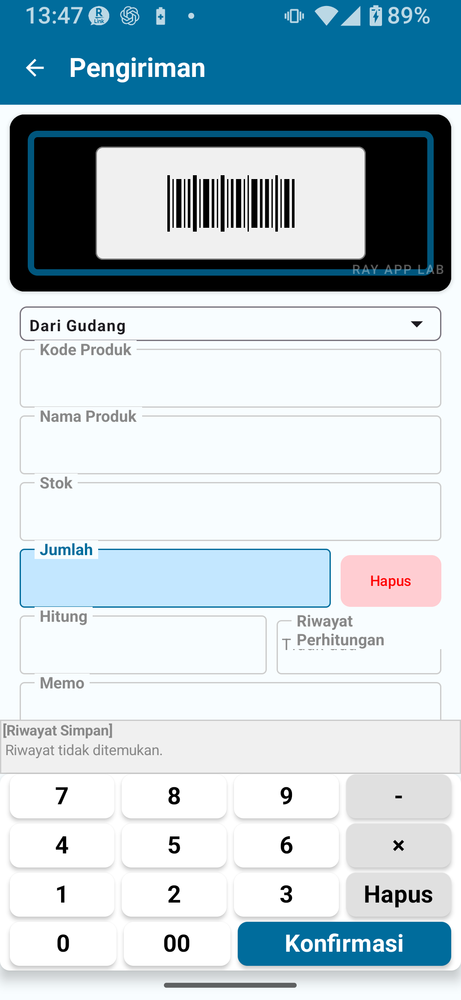
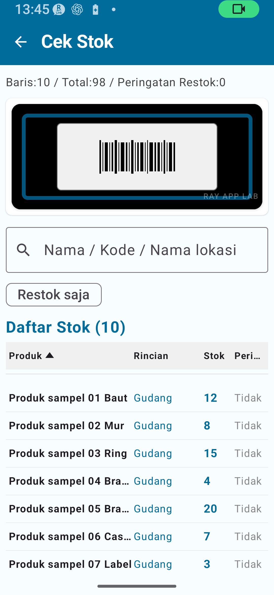
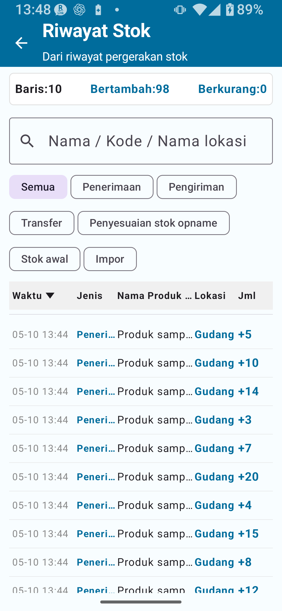
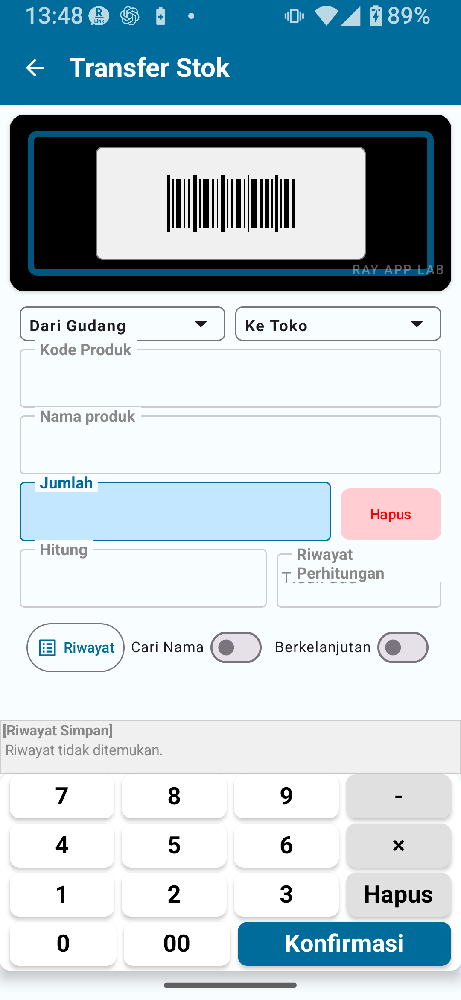

⑥ Manajemen Stok — Paket Standar (Buka Kunci Standar)
Yang ditambahkan Paket Standar, stok masuk, stok keluar, pengecekan stok, riwayat, impor/ekspor CSV, penggantian stok, dan penambahan sebagai stok masuk
Topik yang dibahas: Yang ditambahkan Manajemen Stok Paket Standar / Perbedaan dari paket gratis / Stok masuk / Stok keluar / Pengecekan stok / Riwayat stok / Pengelolaan lokasi / Impor/ekspor CSV / Ganti stok saat ini / Tambahkan sebagai stok masuk / Catatan penting / Alur kerja yang direkomendasikan
BAB 1
Ikhtisar Paket Standar
Manajemen Stok Paket Standar mendukung lebih banyak data daripada paket gratis. Anda dapat menjalankan operasi harian seperti stok masuk, stok keluar, pengecekan stok, dan riwayat stok dengan lebih nyaman, dan cakupan pengelolaan lokasi juga diperluas.
Batasan Paket Standar
Item
Paket Gratis
Paket Standar
Data master
Maks. 30
Maks. 300
Data riwayat stok
Maks. 30
Maks. 1.000
Data yang diekspor
Maks. 30
Maks. 300
Kunci rotasi layar
✗
○
Pendaftaran Katalog Lokasi
Terbatas di paket gratis
Tersedia dalam batas Paket Standar
Edit langsung total kumulatif terdaftar
✗
✗ (memerlukan Paket Lengkap)

Gbr. 1-1 Halaman Beranda Manajemen Stok
BAB 2
Perbedaan dari Paket Gratis
✅ Yang ditambahkan atau diperluas oleh Paket Standar
Batas data master naik dari 30 → 300
Batas riwayat stok naik dari 30 → 1.000
Batas ekspor naik dari 30 → 300
Kunci rotasi layar tersedia
Cakupan pengelolaan lokasi diperluas
Lebih mudah mempertahankan operasi harian yang berkelanjutan: stok masuk, stok keluar, pengecekan stok, dan riwayat
BAB 3
Stok Masuk (Penerimaan)
Operasi stok masuk menambah stok. Gunakan saat barang datang — misalnya untuk pembelian, penerimaan barang, dan transaksi sejenis.

Gbr. 3-1 Layar Stok Masuk
Prosedur Stok Masuk
Buka Manajemen Stok → Stok Masuk.
Pindai barcode atau masukkan kode produk.
Konfirmasi nama produk. Jika kode belum terdaftar, lanjutkan untuk membuat entri baru di Katalog Produk.
Di entri Katalog Produk baru, daftarkan nama produk, harga jual, dan titik pemesanan ulang.
Setelah disimpan, kembali ke layar Stok Masuk — kode dan nama produk yang terdaftar akan terisi otomatis.
Pilih lokasi tujuan (gudang, toko, dll.).
Masukkan jumlah yang diterima.
Ketuk Simpan. Jumlah langsung ditambahkan ke stok.
Konfirmasi pembaruan di Pengecekan Stok atau Riwayat Stok.
💡 Tentang atribut Katalog ProdukHarga jual dan titik pemesanan ulang adalah atribut yang dikelola di Katalog Produk — tidak dimasukkan untuk setiap transaksi stok masuk. Pada layar Stok Masuk biasa, fokus pada pengisian jumlah, lokasi, dan catatan.
⚠ CatatanStok masuk langsung tercermin di stok. Selalu konfirmasi jumlah dan lokasi sebelum menyimpan. Jika Anda menyadari jumlah yang salah setelah menyimpan, periksa Riwayat Stok dan ikuti panduan dalam aplikasi untuk memperbaiki, membalikkan transaksi, atau mencatat penyesuaian sesuai kebutuhan.
BAB 4
Stok Keluar (Pengiriman)
Operasi stok keluar mengurangi stok. Gunakan untuk penjualan, pengiriman keluar, pengantaran, dan transaksi sejenis.

Gbr. 4-1 Layar Stok Keluar
Prosedur Stok Keluar
Buka Manajemen Stok → Stok Keluar.
Pindai barcode atau masukkan kode produk.
Konfirmasi nama produk.
Pilih lokasi sumber (lokasi tempat stok keluar).
Masukkan jumlah yang akan dikirim/dikeluarkan.
Ketuk Simpan. Jumlah langsung dikurangi dari stok.
Konfirmasi pembaruan di Pengecekan Stok atau Riwayat Stok.
💡 Tentang kolom stokKolom stok di layar Stok Keluar menampilkan stok saat ini untuk produk dan lokasi yang dipilih — ini adalah kolom tampilan, bukan kolom input yang dapat diedit. Stok berkurang setelah jumlah stok keluar disimpan.
🚨 PentingJangan masukkan jumlah stok keluar yang melebihi stok saat ini. Periksa jumlah stok per lokasi sebelum memasukkan jumlah yang akan dikeluarkan.
BAB 5
Pengecekan Stok
Pengecekan Stok awalnya menampilkan total stok gabungan per produk. Pemeriksaan kebutuhan pemesanan ulang membandingkan total stok dari semua lokasi dengan pengaturan "Sertakan dalam pemeriksaan kebutuhan pemesanan ulang" yang aktif dengan titik pemesanan ulang di Katalog Produk.

Gbr. 5-1 Layar Pengecekan Stok
Prosedur Pengecekan Stok
Buka Manajemen Stok → Pengecekan Stok.
Temukan produk yang ingin Anda periksa (gunakan pencarian atau gulir daftar).
Identifikasi produk yang berada di bawah titik pemesanan ulangnya (ditampilkan sebagai produk yang memerlukan pemesanan ulang).
Ketuk produk untuk melihat rincian per lokasi, riwayat, dan informasi detail. Dalam tampilan rincian per lokasi, pemeriksaan kebutuhan pemesanan ulang tidak ditampilkan atau dianggap tidak aktif.
BAB 6
Riwayat Stok
Riwayat Stok menampilkan log semua operasi stok masuk, stok keluar, transfer, penyesuaian stok opname, stok awal, dan impor CSV.

Gbr. 6-1 Layar Riwayat Stok
Yang Dapat Dilihat di Riwayat Stok
Tanggal/waktu dan jenis operasi (stok masuk, stok keluar, transfer, penyesuaian, dll.)
Kode dan nama produk
Lokasi dan perubahan jumlah
Catatan
💡 TipsJika jumlah stok tidak sesuai, telusuri Riwayat Stok ke belakang untuk memeriksa kesalahan input atau penyesuaian yang tidak terduga.
BAB 7
Pengelolaan Lokasi
Paket Standar terutama menggunakan lokasi dasar "Gudang" dan "Toko".
Mode
Lokasi yang tersedia
Sederhana A
Gudang saja
Sederhana B
Gudang + Toko
Sederhana C
Toko saja
Transfer Stok
Transfer stok memindahkan jumlah stok dari satu lokasi ke lokasi lain.
⚠ CatatanJangan melakukan transfer antara lokasi yang sama. Jika hanya ada satu lokasi (misalnya Sederhana A), transfer stok tidak diperlukan — gunakan stok masuk, stok keluar, atau koreksi sebagai gantinya.
💡 TipsUntuk menggunakan lokasi detail (misalnya nomor rak), Anda perlu beralih ke mode Detail di pengaturan. Mode Detail digunakan saat mengakses fitur Paket Lengkap.
BAB 8
Impor / Ekspor CSV
Manajemen Stok memungkinkan Anda mengimpor, mengekspor, dan mencadangkan data stok menggunakan file CSV.
🚨 PentingOperasi impor CSV dapat mengubah data Anda secara signifikan. Selalu ekspor CSV cadangan sebelum mengimpor.
Kolom product_name diperlukan untuk kode yang belum terdaftar
Manajemen Stok Standar atau lebih tinggi
CSV stok (tanpa kolom lokasi)
Mengimpor data stok untuk lokasi yang ditentukan
item_code, quantity, product_name
item_code, quantity wajib
Pilih lokasi tujuan saat mengimpor
Manajemen Stok Standar atau lebih tinggi
CSV cadangan
Cadangan dan pemulihan data lengkap
Produk, stok saat ini, lokasi, kategori — beberapa file
Memerlukan set cadangan lengkap
Dapat dibagi ke beberapa file
Manajemen Stok Standar atau lebih tinggi
Menggunakan Layar Pemetaan Kolom
Saat mengimpor CSV, Anda memilih kolom mana yang dipetakan ke kode produk, nama produk, jumlah, lokasi, dan sebagainya.
Pilih file CSV.
Di layar pemetaan kolom, tetapkan setiap kolom CSV ke kolom yang sesuai (kode produk, jumlah, dll.).
Konfirmasi penetapan kolom dan jalankan impor.
⚠ Kesalahan umum impor CSV
Kolom wajib tidak ada
Kolom yang sama ditetapkan ke lebih dari satu kolom
Kolom jumlah kosong atau bukan angka
Tidak ada kolom nama produk yang dipilih untuk kode yang belum terdaftar
Tidak ada kolom lokasi dan tidak ada lokasi tujuan yang dipilih
CSV kosong atau tidak memiliki baris yang dapat diimpor

Gbr. 8-1 Layar Transfer Stok
BAB 9
Ganti Stok Saat Ini
Ganti Stok Saat Ini adalah mode impor CSV yang memperlakukan jumlah dalam file sebagai stok saat ini yang baru. Riwayat yang ada tetap dipertahankan, dan selisihnya dicatat sebagai entri riwayat penyesuaian.
🚨 Penting: gunakan Ganti Stok Saat Ini dengan hati-hati
Baris stok yang tidak ada di CSV mungkin diatur menjadi 0.
Operasi ini dapat berdampak besar pada data stok yang sudah ada — selalu buat cadangan terlebih dahulu.
Baca layar konfirmasi dengan teliti sebelum menjalankan.
Prosedur Ganti Stok Saat Ini
Ekspor CSV cadangan (wajib).
Buka Manajemen Stok → Impor CSV → Ganti Stok Saat Ini.
Pilih file CSV yang akan diimpor.
Konfirmasi pemetaan kolom di layar pemetaan.
Di layar konfirmasi, tinjau detail penggantian (isi penyesuaian) dengan cermat.
Jika semuanya terlihat benar, jalankan impor.
Verifikasi entri penyesuaian di Riwayat Stok.
BAB 10
Tambahkan sebagai Stok Masuk
Tambahkan sebagai Stok Masuk adalah mode impor CSV yang menambahkan jumlah dalam file ke stok yang ada sebagai transaksi stok masuk — berbeda dari Ganti Stok Saat Ini, mode ini menambahkan ke stok saat ini, bukan menimpanya.
Mode impor
Perilaku
Contoh penggunaan
Ganti Stok Saat Ini
Memperlakukan jumlah CSV sebagai stok saat ini yang baru. Selisih dicatat sebagai riwayat penyesuaian
Koreksi stok setelah stok opname, pengaturan awal
Tambahkan sebagai Stok Masuk
Menambahkan jumlah CSV ke stok saat ini sebagai stok masuk
Impor stok masuk secara massal
💡 TipsGunakan Ganti Stok Saat Ini saat menyiapkan stok untuk pertama kali, dan gunakan Tambahkan sebagai Stok Masuk saat menambahkan ke stok yang sudah ada. Konfirmasi mode yang Anda butuhkan sebelum menjalankan impor.
BAB 11
Catatan Penting
⚠ Menyiapkan Lokasi DetailUntuk menggunakan lokasi detail, beralihlah ke mode Detail di pengaturan. Lokasi detail tidak akan muncul jika Anda masih menggunakan Sederhana A/B/C.
⚠ Verifikasi Lokasi dan Jumlah Sebelum BertindakStok masuk, stok keluar, transfer, dan impor CSV langsung tercermin di stok. Konfirmasi lokasi dan jumlah sebelum setiap operasi.
🚨 Buat Cadangan Sebelum Operasi CSVSelalu buat cadangan sebelum menjalankan Ganti Stok Saat Ini, Tambahkan sebagai Stok Masuk, dan operasi pemulihan cadangan.
BAB 12
Alur Kerja yang Direkomendasikan
Catat Stok Masuk dan Stok Keluar Setiap Hari
Daftarkan stok masuk melalui Stok Masuk setiap kali barang datang.
Catat stok keluar melalui Stok Keluar setiap kali barang keluar.
Tetapkan titik pemesanan ulang di Katalog Produk dan gunakan Pengecekan Stok untuk memantau waktu restok.
Pengecekan Stok Berkala
Periksa jumlah stok secara berkala — mingguan, bulanan, atau sesuai kebutuhan.
Kombinasikan dengan stok opname untuk memverifikasi secara berkala bahwa jumlah fisik sesuai dengan catatan stok Anda.
Cadangan Rutin
Ekspor CSV cadangan setidaknya sekali sebulan dan simpan di PC atau penyimpanan cloud.
💡 Pertimbangkan peningkatan ke Paket Lengkap jika Anda…
Ingin hasil stok opname otomatis memperbarui stok
Perlu mengedit langsung total stok kumulatif terdaftar
Memiliki lebih dari 300 produk
📌 Poin Utama Bab Ini
Paket Standar menaikkan batas: hingga 300 data master, 1.000 data riwayat, dan 300 data ekspor.
Stok masuk dan stok keluar langsung tercermin di stok — konfirmasi jumlah dan lokasi sebelum menyimpan.
Riwayat Stok menampilkan log lengkap semua operasi stok masuk, stok keluar, transfer, dan penyesuaian.
Impor CSV memiliki dua mode — Ganti Stok Saat Ini dan Tambahkan sebagai Stok Masuk. Selalu buat cadangan sebelum menggunakan keduanya.
Lokasi diatur melalui mode Sederhana A/B/C. Beralihlah ke mode Detail untuk lokasi detail.
Edit langsung total kumulatif terdaftar memerlukan Paket Lengkap.
🔍 Catatan Sebelum Digunakan
Gunakan Katalog Lokasi dalam opsi yang ditampilkan di aplikasi. Untuk pengelolaan lokasi detail, periksa mode saat ini dan pertimbangkan fitur Paket Lengkap bila diperlukan.
Jika entri stok masuk atau stok keluar tersimpan keliru, periksa Riwayat Stok dan ikuti panduan dalam aplikasi untuk memperbaiki, membalikkan transaksi, atau mencatat penyesuaian sesuai kebutuhan.
Saat mengekspor set CSV cadangan, simpan semua file yang dihasilkan bersama-sama dan simpan dengan aman.
Alur operasi aktual layar Transfer Stok ditunjukkan pada gambar di bagian sebelumnya.
Tangkapan layar pemeriksaan kolom CSV dan konfirmasi penggantian stok ditunjukkan pada bagian CSV.